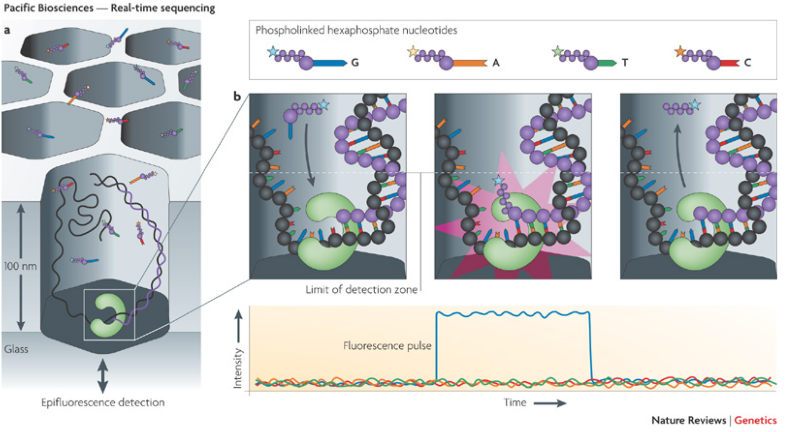
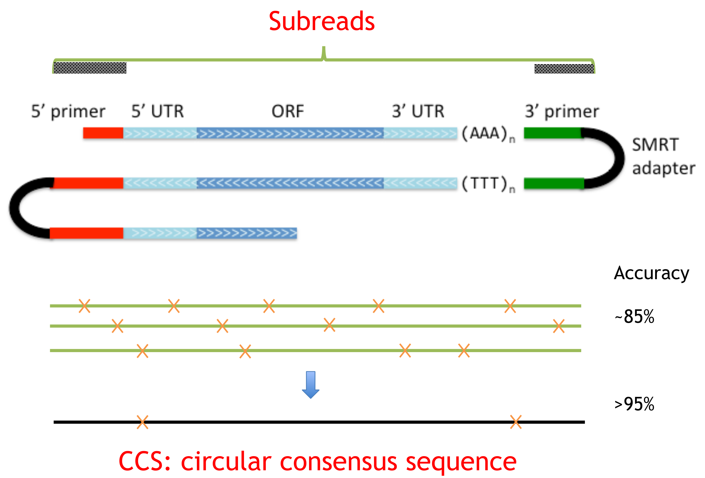
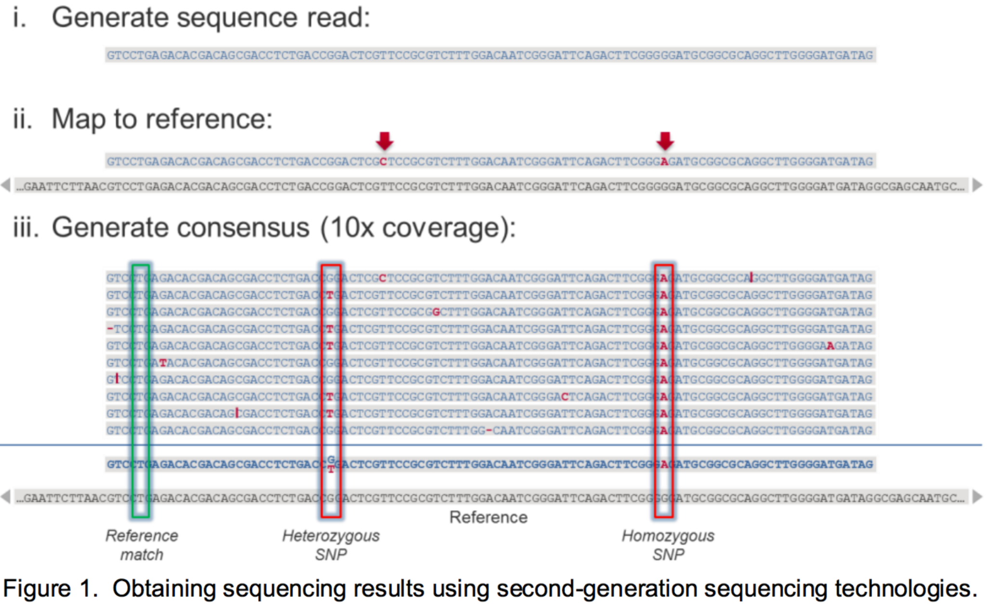
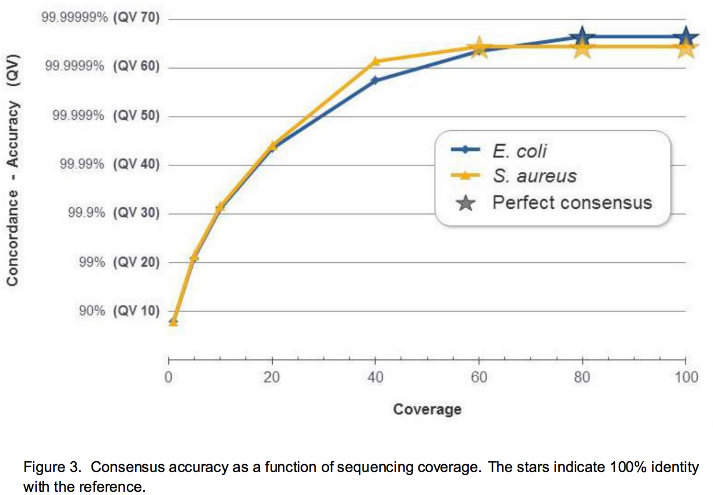

Long read sequencing
Nicolas Delhomme, Nathaniel Street, Bastian Schiffthaler
Learning Objectives
At the end of this lecture you will be able to:
- Describe the extant 3rd generation technologies
- Appraise 3rd gen library preparation limitations
- Explain the PacBio IsoSeq preprocessing workflow
A historical perspective
| Founded | Name | Defunct |
|---|---|---|
| 2003 | Helicos BioSciences | 2012 |
| 2004 | Pacific BioSciences | |
| 2005 | 454 Life Sciences* | 2013 |
| 2005 | Oxford Nanopore | |
| 2007 | Solexa* (Illumina) | |
| 2018 | PacBio* (Illumina) |
* next-generation sequencing for illustration purposes
Sequencing methods
PacBio
- Single molecule real-time sequencing-by-synthesis
- Observe a single polymerase as bases incorporated
- Uses phospholinkednucleotides, each base emits characteristics signal
- Kilobase length reads and read phasing (3 bp per second)
Sequencing methods
Nanopore
- Sequencing-by-cleavage
- In a nanopore, cleave DNA base-by-base and record bases using characteristic electrical signal per nucleotoide
PacBio Sequel
- 1 million ZMW per SMRT cell
- Average read length > 10kbp
- Output of 7.6 Gb
- Run time of 30m - 20h
- Runs 1 - 16 cells at a time
PacBio template preparation

The Zero Mode Waveguide (ZMW)
PacBio sequencing
PacBio Read Structure
PacBio Consensus Accuracy

